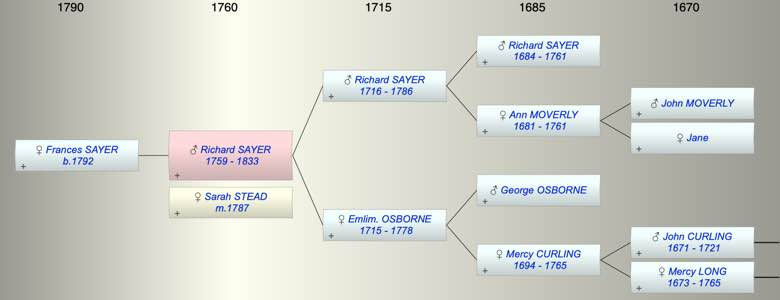

| [Index] |
| Richard SAYER (1759 - 1833) |
|  |
| b. 1759 at St Laurence |
| m. 16 May 1787 Sarah STEAD at St Laurence |
| d. 1833 at St Laurence aged 74 |
| Parents: |
| Richard SAYER (1716 - 1786) |
| Emlim. Emblem OSBORNE (1715 - 1778) |
| Siblings (3): |
| Richard SAYER (1748 - 1749) |
| George Osborn SAYER (1751 - ) |
| Emblen SAYER (1752 - 1752) |
| Children (1): |
| Frances Mary SAYER (1792 - ) |
| Events in Richard SAYER (1759 - 1833)'s life | |||||
| Date | Age | Event | Place | Notes | Src |
| 1759 | Richard SAYER was born | St Laurence | Note 1 | ||
| 27 Feb 1778 | 19 | Death of mother Emlim. Emblem OSBORNE (aged 63) | St Laurence | Note 2 | |
| 06 Dec 1786 | 27 | Death of father Richard SAYER (aged 70) | St Laurence | Note 3 | |
| 16 May 1787 | 28 | Married Sarah STEAD | St Laurence | Note 4 | |
| 23 Nov 1792 | 33 | Birth of daughter Frances Mary SAYER | St Laurence | Note 5 | |
| 1833 | 74 | Richard SAYER died | St Laurence | Note 6 | |
| Created on a Mac™ using iFamily for Mac™ on 8 Oct 2023 |